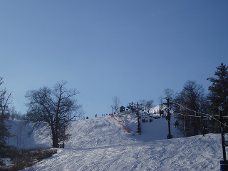

Welcome to Pleasant Valley!
Welcome to Pleasant Valley Log Cabins and Cottages. Are you looking for a place to vacation that is quiet, secluded and scenic; yet is close to a number of attractions and activities suitable for a couple or entire family? Pleasant Valley Log Cabins and Cottages is nestled on 80 acres in the rolling hills and valleys of southwestern Wisconsin's countryside. We are centrally located near attractions such as the Elroy-Sparta State Bike Trail, Wildcat Mountain State Park, and the Kickapoo River canoeing area.
The BAR(n) has been closed and will not be available for use at Pleasant Valley.
Explore the region
Elroy Sparta State Bike Trail
– is an especially appealing trail with three rock tunnels, no more than a 3% grade, 32 miles long, and great views of the countryside. The trail provides direct access to the "400" Bike Trail and the Omaha Bike Trail. Bike rentals are available locally.
Wildcat Mountain State Park
– contains 3,400 acres of nature's beauty at its best. There are many hiking trails and a wondrous outlook point. A large variety of wild animals, birds and wild flowers will be spotted since a large area of the park is a wildlife refuge. There are also twelve miles of horseback riding trails, accessed through rental or bring your own!
Kickapoo River
– is located in the historic town of Ontario, canoes can be rented to traverse the Kickapoo River which meanders for 120 miles. Shuttle service and maps are provided so that you can choose where you would like to launch and take-out along the way. "Kickapoo" means crooked river. It winds through continuous rock formations, Wildcat Mountain State Park, and even an occasional dairy farm! An abundant amount of wildlife will be seen along the banks of the river. Pack a picnic and pull-out onto a sandy beach to enjoy the serene beauty and solitude.
Trout Fishing
– Billings creek is within 1 mile of the cabin and has undergone extensive habitat work. It is lightly fished and provides great solitude. Public access is excellent and significant trout numbers exist. The west fork of the Kickapoo is nearby and yields sizeable browns. A state trout stamp is needed.
Within Minutes
– all are located within a short drive of the cabins
- Amish Gift Shops and Bakeries
- Golfing at Spring Valley (located in Union Center)
- Local Trout Fishing Streams
- Famous Vernon County Round Barns
- Kickapoo Valley Reserve (over 6,000 acres)
- Hillsboro Brewing Company
Within an Hour
– if you feel like venturing away from Pleasant Valley for the day, here are a few area activities and attractions
- Dutch Hollow Lake and Lake Redstone (great fishing and water skiing)
- Ho Chunk Casino and Bingo
- Wisconsin Dells Family Recreation Area
- Baraboo Circus World Museum
- Castle Rock Lake (pontoon rentals)
- Devil's Lake
- Various Wineries (Branches, Vernon Vineyards, Burr Oak)
Family Activity Suggestions
– here are a few suggestions on things to do right at pleasant valley
- Spend the morning in your pajamas playing board games (many different games available in the cabins)
- Roast marshmallows or make mountain pies by a crackling fire (mountain pie iron available)
- Complete a scavenger hunt for a prize
- Pick raspberries or blackberries from our many natural patches (June through August)
- Identify wildflowers along Riley Creek Trail or the many birds that visit our feeders
- Identify as many constellations as you can (you will marvel at how many stars you can see when there are no city lights!)
- Catch fireflies in "Firefly Field" (warm summer night activity)
- Arrange a hayride with us and the other cabins (nominal cost)
- On a rainy day listen to the sound of the raindrops while sitting on your cabin porch (all cabins have covered porches)
- Hike to the top of Skyler summit (not for everyone)
- Feed the horses
- Walk our country road and be surprised that no cars passed by during the entire time!
- Sleep in
- Read a good book, or nap to a bad one!
Snow season, right outside your door
Snowmobiling
We are located about 1/4 mile from a state funded, groomed trail. Ride in the fields near your cabin, or on a network of trails that can take you anywhere in the state. Unfortunately, we do not rent snowmobiles. Call for trail conditions.
Cross Country Skiing
Groomed trails are nearby at Wildcat Mountain State Park. There is a wonderful 7 mile loop trail that ranges in difficulty from easy to difficult. The rolling hills and deep valleys provide scenery for ridge top touring, with 5 beautiful overlooks. There is torch lit night skiing scheduled at nearby Wildcat Mountain State Park. Check with the park for dates and times.
Sledding/Tubing
A tubing hill is available at Fort McCoy (35 minutes). It is an inexpensive way to enjoy some great tubing via a rope tow. Downhill skiing and snowboarding rentals are available at Fort McCoy also. There is also great sledding available right on the hills at Pleasant Valley.
Down Hill Skiing
Down hill ski slopes are located about 45 minutes from Pleasant Valley Log Cabins. Mount La Crosse and Cascade Mountain are both about the same distance away. Ski rental is available.
Pleasant Valley is a Winter Wonderland!
A special thanks to Pastor Fedke for the great winter pictures!
{kind=link}
{kind=link}
{kind=link}
Pleasant Valley Log Cabins Ski Packages
Ski packages must be arranged at the time cabins are reserved.
Monday: Student Night
All students receive an $18 lift ticket and $5 off rental packages from 3pm till 8pm every Monday night! No reservations required for lift tickets but reservations will be required for rentals. Valid student I.D. required for college students.
Thursday: Thrifty Thursday
Thursday nights are a blast with a thrifty discounted ticket from 3pm till 8pm — pay just $20 for a lift ticket! Come straight out after work and have dinner right here at the slopes!
Saturday: La Crosse-Eau Claire CW Family Night, 3pm–8pm
Enjoy winter with your family every Saturday this Season! First parent pays $45 for a ski rental package and lift ticket and every additional family member after that pays $15 for lift ticket, $15 for ski rental or $20 for snowboard rental. Valid for up to five family members.

For reservations or additional information call:
(608) 633-0029 (ask for Joe or LeAnn Fisher)